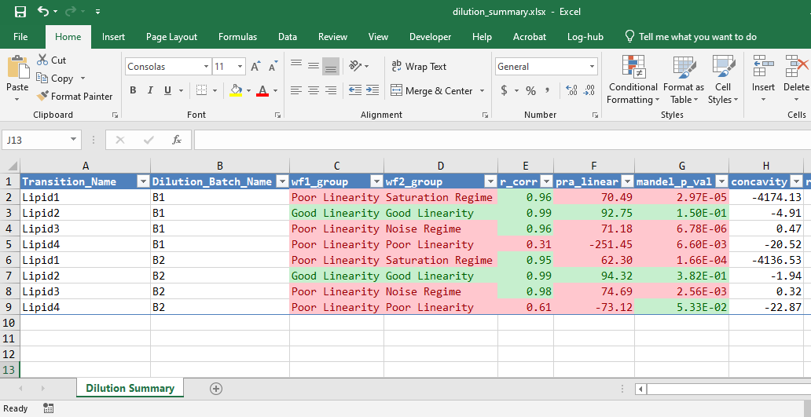

R package used to validate if a dilution curve is linear or not.
Installation
You can install the development version from GitHub with:
If this repository is private, go to this link to learn how to set up your autorization token.
How it works
We try to categorise dilution curves based on the results of three parameters
- Correlation Coefficient ( R )
- Mandel’s Fitting Test
- Percent Residual Accuracy ( PRA )
Correlation Coefficient ( R ) can be found in this paper. Equation ( 1 ) is used.
Mandel’s Fitting Test can be found in this paper. Equation ( 5 ) is used.
Percent Residual Accuracy ( PRA ) can be found in this paper. Equation ( 6 ) is used.
Two methods are proposed to categorise the dilution curves.
Workflow 1 (FFP)
Workflow 1 involves using R and PRA to categorise the dilution curves.
- If R < 0.8, classify as poor linearity.
- If R ≥ 0.8, PRA < 80, classify as poor linearity.
- If R ≥ 0.8, PRA ≥ 80, classify as good linearity.
Workflow 2
Workflow 2 involves using R, PRA and Mandel’s Fitting Test to categorise the dilution curves.
- If R < 0.8, classify as poor linearity.
- If R ≥ 0.8, PRA < 80, fit the quadratic model and use Mandel’s Fitting Test to see if the quadratic model is a better fit
- If not better, classify as poor linearity
- If better, check concavity of the quadratic model
- If concavity is negative, classify as saturation
- If concavity is positive, classify as limit of detection (LOD)
- If R ≥ 0.8, PRA ≥ 80, classify as good linearity
Usage
We first create our data set.
library(DCVtestkit)
# Data Creation
dilution_percent <- c(10, 20, 25, 40, 50, 60,
75, 80, 100, 125, 150,
10, 25, 40, 50, 60,
75, 80, 100, 125, 150)
dilution_batch <- c("B1", "B1", "B1", "B1", "B1",
"B1", "B1", "B1", "B1", "B1", "B1",
"B2", "B2", "B2", "B2", "B2",
"B2", "B2", "B2", "B2", "B2")
sample_name <- c("Sample_010a", "Sample_020a", "Sample_025a",
"Sample_040a", "Sample_050a", "Sample_060a",
"Sample_075a", "Sample_080a", "Sample_100a",
"Sample_125a", "Sample_150a",
"Sample_010a", "Sample_025a",
"Sample_040a", "Sample_050a", "Sample_060a",
"Sample_075a", "Sample_080a", "Sample_100a",
"Sample_125a", "Sample_150a")
lipid1_area_saturated <- c(5748124, 16616414, 21702718, 36191617,
49324541, 55618266, 66947588, 74964771,
75438063, 91770737, 94692060,
5192648, 16594991, 32507833, 46499896,
55388856, 62505210, 62778078, 72158161,
78044338, 86158414)
lipid2_area_linear <- c(31538, 53709, 69990, 101977, 146436, 180960,
232881, 283780, 298289, 344519, 430432,
25463, 63387, 90624, 131274, 138069,
205353, 202407, 260205, 292257, 367924)
lipid3_area_lod <- c(544, 397, 829, 1437, 1808, 2231,
3343, 2915, 5268, 8031, 11045,
500, 903, 1267, 2031, 2100,
3563, 4500, 5300, 8500, 10430)
lipid4_area_nonlinear <- c(380519, 485372, 478770, 474467, 531640, 576301,
501068, 550201, 515110, 499543, 474745,
197417, 322846, 478398, 423174, 418577,
426089, 413292, 450190, 415309, 457618)
dilution_annot <- tibble::tibble(Sample_Name = sample_name,
Dilution_Batch = dilution_batch,
Dilution_Percent = dilution_percent)
lipid_data <- tibble::tibble(Sample_Name = sample_name,
Lipid1 = lipid1_area_saturated,
Lipid2 = lipid2_area_linear,
Lipid3 = lipid3_area_lod,
Lipid4 = lipid4_area_nonlinear)Merge the data together using create_dilution_table
# Create dilution table
dilution_table <- create_dilution_table(dilution_annot, lipid_data,
common_column = "Sample_Name",
signal_var = "Area",
column_group = "Transition_Name"
)
print(dilution_table, width = 100)
#> # A tibble: 164 x 5
#> Sample_Name Dilution_Batch Dilution_Percent Transition_Name Area
#> <chr> <chr> <dbl> <chr> <dbl>
#> 1 Sample_010a B1 10 Lipid1 5748124
#> 2 Sample_010a B1 10 Lipid2 31538
#> 3 Sample_010a B1 10 Lipid3 544
#> 4 Sample_010a B1 10 Lipid4 380519
#> 5 Sample_010a B1 10 Lipid1 5192648
#> 6 Sample_010a B1 10 Lipid2 25463
#> 7 Sample_010a B1 10 Lipid3 500
#> 8 Sample_010a B1 10 Lipid4 197417
#> 9 Sample_020a B1 20 Lipid1 16616414
#> 10 Sample_020a B1 20 Lipid2 53709
#> # … with 154 more rowsSummarise each dilution curve for each transition and batch with summarise_dilution_table
# Create dilution statistical summary
dilution_summary <- summarise_dilution_table(dilution_table,
grouping_variable = c("Transition_Name",
"Dilution_Batch"),
conc_var = "Dilution_Percent",
signal_var = "Area")
print(dilution_summary, width = 100)
#> # A tibble: 8 x 9
#> Transition_Name Dilution_Batch r_corr r2_linear r2_adj_linear mandel_stats
#> <chr> <chr> <dbl> <dbl> <dbl> <dbl>
#> 1 Lipid1 B1 0.952 0.906 0.901 62.5
#> 2 Lipid2 B1 0.978 0.957 0.954 1.19
#> 3 Lipid3 B1 0.971 0.942 0.939 84.6
#> 4 Lipid4 B1 0.344 0.118 0.0718 5.11
#> 5 Lipid1 B2 0.949 0.9 0.894 57.0
#> 6 Lipid2 B2 0.976 0.953 0.951 1.10
#> 7 Lipid3 B2 0.969 0.940 0.936 82.2
#> 8 Lipid4 B2 0.384 0.147 0.0997 6.77
#> mandel_p_val pra_linear concavity
#> <dbl> <dbl> <dbl>
#> 1 0.000000290 65.8 -4134.
#> 2 0.290 90.2 -3.35
#> 3 0.0000000320 72.9 0.394
#> 4 0.0363 -233. -19.9
#> 5 0.000000792 64.6 -4147.
#> 6 0.308 90.0 -3.39
#> 7 0.0000000637 72.4 0.401
#> 8 0.0186 -172. -22.6Classify each dilution curve according to Workflow 1 and Workflow 2.wf1_group1 gives the results of Workflow 1wf2_group2 gives the results of Workflow 2
dilution_classified <- evaluate_linearity(dilution_summary,
grouping_variable = c("Transition_Name",
"Dilution_Batch"))
print(dilution_classified, width = 100)
#> # A tibble: 8 x 11
#> Transition_Name Dilution_Batch wf1_group wf2_group r_corr pra_linear
#> <chr> <chr> <chr> <chr> <dbl> <dbl>
#> 1 Lipid1 B1 Poor Linearity Saturation 0.952 65.8
#> 2 Lipid2 B1 Good Linearity Good Linearity 0.978 90.2
#> 3 Lipid3 B1 Poor Linearity LOD 0.971 72.9
#> 4 Lipid4 B1 Poor Linearity Poor Linearity 0.344 -233.
#> 5 Lipid1 B2 Poor Linearity Saturation 0.949 64.6
#> 6 Lipid2 B2 Good Linearity Good Linearity 0.976 90.0
#> 7 Lipid3 B2 Poor Linearity LOD 0.969 72.4
#> 8 Lipid4 B2 Poor Linearity Poor Linearity 0.384 -172.
#> mandel_p_val concavity r2_linear r2_adj_linear mandel_stats
#> <dbl> <dbl> <dbl> <dbl> <dbl>
#> 1 0.000000290 -4134. 0.906 0.901 62.5
#> 2 0.290 -3.35 0.957 0.954 1.19
#> 3 0.0000000320 0.394 0.942 0.939 84.6
#> 4 0.0363 -19.9 0.118 0.0718 5.11
#> 5 0.000000792 -4147. 0.9 0.894 57.0
#> 6 0.308 -3.39 0.953 0.951 1.10
#> 7 0.0000000637 0.401 0.940 0.936 82.2
#> 8 0.0186 -22.6 0.147 0.0997 6.77Results can be exported to Excel via create_excel_report
